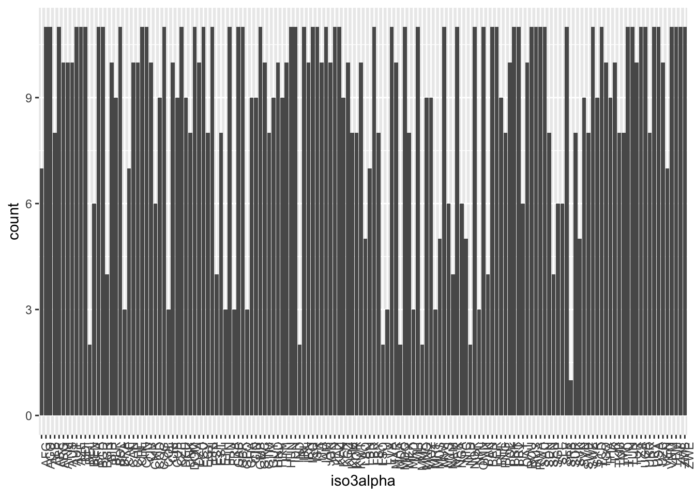
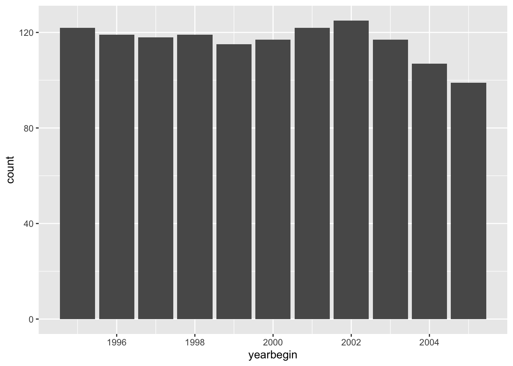

# Read in event data on allegations
allegations <- read.csv("/Users/dave/Documents/teaching/501/2025/topics/data-wrangling/allegation.csv", stringsAsFactors = FALSE)
# Convert relevant columns to numeric (0/1)
allegations <- allegations %>%
mutate(across(c(illtreatment, scarring, stealth), ~ifelse(. == "Yes", 1, 0))) Data Aggregation and Joining
Illustrating Aggregation and Joining with ITT and Polity Data
Introduction
This document demonstrates data aggregation and joining using ITT disaggregated event data and Polity data. We will aggregate event data to the country-year level and then join it with Polity data to explore the relationship between political regime characteristics and events.
Data Loading and Initial Processing
Data Aggregation
We aggregate the allegations data to the country-year level, summing the counts of illtreatment, scarring, stealth events, and calculating the total number of allegations.
aggregated_df <- allegations %>%
group_by(iso3alpha, yearbegin) %>%
summarize(sum_illtreatment = sum(illtreatment, na.rm = TRUE),
sum_scarring = sum(scarring, na.rm = TRUE),
sum_stealth = sum(stealth, na.rm = TRUE),
n_allegations = n()) %>% # Add count of allegations per country-year
ungroup()`summarise()` has grouped output by 'iso3alpha'. You can override using the
`.groups` argument.Checking for Duplicates and Exploring Aggregated Data
# Check for duplicate country-year observations
dupes <- aggregated_df %>%
group_by(iso3alpha, yearbegin) %>%
filter(n() > 1) %>%
dplyr::select(iso3alpha, yearbegin) %>%
distinct()
table(dupes)< table of extent 0 x 0 >No duplicates found; let’s take a look at the aggregated data.
# Explore aggregated data
table(aggregated_df$iso3alpha)
AFG AGO ALB ARE ARG ARM AUS AUT AZE BDI BEL BEN BFA BGD BGR BIH BLR BOL BRA CAF
7 11 11 8 11 10 10 10 11 11 11 2 6 11 11 4 10 9 11 3
CAN CHE CHL CHN CIV CMR COD COG COL CRI CUB CZE DEU DNK DOM DZA ECU EGY ERI ESP
7 10 10 11 11 10 6 9 11 3 10 9 11 9 8 11 10 11 8 11
EST ETH FIN FRA GAB GBR GEO GHA GIN GMB GRC GTM GUY HND HRV HTI HUN IDN IND IRL
4 8 3 11 3 11 11 3 9 9 11 10 8 9 10 9 10 11 11 2
IRN IRQ ISR ITA JAM JOR JPN KAZ KEN KGZ KHM KOR KWT LAO LBN LBR LBY LSO LTU LVA
11 10 11 11 10 11 10 11 11 9 10 8 8 10 5 7 11 8 2 3
MAR MDA MDG MEX MKD MLI MMR MNG MOZ MRT MUS MWI MYS NAM NER NGA NIC NLD NOR NPL
11 10 2 11 8 3 11 2 9 9 3 5 11 6 4 11 6 5 2 11
OMN PAK PAN PER PHL PNG POL PRK PRT PRY QAT ROU RUS RWA SAU SDN SEN SGP SLE SLV
3 11 4 11 11 9 8 10 11 11 6 10 11 11 11 11 8 4 6 6
SRB SUR SVK SVN SWE SWZ SYR TCD TGO THA TJK TKM TMP TTO TUN TUR TZA UGA UKR URY
11 1 8 5 9 8 11 9 11 10 9 10 8 8 11 11 10 11 11 8
USA UZB VEN VNM YEM ZAF ZMB ZWE
11 11 10 7 11 11 11 11 table(aggregated_df$yearbegin)
1995 1996 1997 1998 1999 2000 2001 2002 2003 2004 2005
122 119 118 119 115 117 122 125 117 107 99 # Count distinct countries (using dplyr)
n_distinct_countries_dplyr <- n_distinct(aggregated_df$iso3alpha)
n_distinct_countries_dplyr[1] 148# List unique values
unique(aggregated_df$iso3alpha) [1] "AFG" "AGO" "ALB" "ARE" "ARG" "ARM" "AUS" "AUT" "AZE" "BDI" "BEL" "BEN"
[13] "BFA" "BGD" "BGR" "BIH" "BLR" "BOL" "BRA" "CAF" "CAN" "CHE" "CHL" "CHN"
[25] "CIV" "CMR" "COD" "COG" "COL" "CRI" "CUB" "CZE" "DEU" "DNK" "DOM" "DZA"
[37] "ECU" "EGY" "ERI" "ESP" "EST" "ETH" "FIN" "FRA" "GAB" "GBR" "GEO" "GHA"
[49] "GIN" "GMB" "GRC" "GTM" "GUY" "HND" "HRV" "HTI" "HUN" "IDN" "IND" "IRL"
[61] "IRN" "IRQ" "ISR" "ITA" "JAM" "JOR" "JPN" "KAZ" "KEN" "KGZ" "KHM" "KOR"
[73] "KWT" "LAO" "LBN" "LBR" "LBY" "LSO" "LTU" "LVA" "MAR" "MDA" "MDG" "MEX"
[85] "MKD" "MLI" "MMR" "MNG" "MOZ" "MRT" "MUS" "MWI" "MYS" "NAM" "NER" "NGA"
[97] "NIC" "NLD" "NOR" "NPL" "OMN" "PAK" "PAN" "PER" "PHL" "PNG" "POL" "PRK"
[109] "PRT" "PRY" "QAT" "ROU" "RUS" "RWA" "SAU" "SDN" "SEN" "SGP" "SLE" "SLV"
[121] "SRB" "SUR" "SVK" "SVN" "SWE" "SWZ" "SYR" "TCD" "TGO" "THA" "TJK" "TKM"
[133] "TMP" "TTO" "TUN" "TUR" "TZA" "UGA" "UKR" "URY" "USA" "UZB" "VEN" "VNM"
[145] "YEM" "ZAF" "ZMB" "ZWE"unique(aggregated_df$yearbegin) [1] 1996 1997 1998 1999 2000 2001 2002 1995 2003 2004 2005This gives us a sense of the span of the aggregated data (countries and years covered). Let’s visualize that coverage with some simple histograms.
Data Visualization
# Histogram of country frequencies; labels at 45 degree angle
ggplot(aggregated_df, aes(x = iso3alpha)) +
geom_bar() +
theme(axis.text.x = element_text(angle = 90, hjust = 1))
# Histogram of year frequencies
ggplot(aggregated_df, aes(x = yearbegin)) + geom_bar()
Some unevenness in country coverage; lots covering 10 or 11 years, but a good number covering 3 or so. Time coverage is good until 2005; some countries not measured in 2005.
Let’s join polity data to the aggregated data to explore the relationship between political regime characteristics and allegations.
Polity Data Processing
polity <- read.csv("/Users/dave/Documents/teaching/501/2025/topics/data-wrangling/polity5.csv", stringsAsFactors = FALSE)
# Filter to relevant years (1995-2005) and select relevant columns
polity <- polity %>%
filter(year >= 1995 & year <= 2005) %>%
dplyr::select(ccode, scode, country, year, democ, autoc, polity2) Making a mistake
ITT has a variable called iso3alpha which is ISO 3166-1 alpha-3 country codes. Polity has a variable called scode which looks like an ISO3 code, so let’s join on that and year.
# Join polity with aggregated_df (iso3alpha -> ccode) (yearbegin -> year) ----
merged_df <- aggregated_df %>%
left_join(polity, by = c("iso3alpha" = "scode", "yearbegin" = "year"))
# Check for missing on polity2
table(is.na(merged_df$polity2)) #lots of mistakes
FALSE TRUE
590 690 # list iso3alpha with missing polity2
print(n = 20, merged_df %>% filter(is.na(polity2)) %>% dplyr::select(iso3alpha, yearbegin) %>% distinct())# A tibble: 690 × 2
iso3alpha yearbegin
<chr> <int>
1 AFG 2001
2 AFG 2002
3 AGO 1995
4 AGO 1996
5 AGO 1997
6 AGO 1998
7 AGO 1999
8 AGO 2000
9 AGO 2001
10 AGO 2002
11 AGO 2003
12 AGO 2004
13 AGO 2005
14 ARE 1995
15 ARE 1996
16 ARE 1997
17 ARE 1998
18 ARE 2001
19 ARE 2002
20 ARE 2004
# ℹ 670 more rowsLots of mistakes here - fewer than half our ITT cases matched with Polity. We know Polity’s coverage is very good, so there should be few misses. It was a mistake to assume scode was an ISO3 code. Let’s fix that by using countrycode to add cow codes to the ITT data and then joining on cow code and year.
Joining Data and Handling Missing Values
# Add ccode to aggregated_df (using countrycode package)
aggregated_df$ccode <- countrycode(aggregated_df$iso3alpha, "iso3c", "cown", warn = FALSE)
# Join aggregated_df with polity on ccode and year
merged_df <- aggregated_df %>%
left_join(polity, by = c("ccode" = "ccode", "yearbegin" = "year"))
# Check for missing polity2 values after improved join
table(is.na(merged_df$polity2))
FALSE TRUE
1233 47 # Filter and print rows with missing polity2
missing_df <- merged_df %>% filter(is.na(polity2))
print(missing_df %>% dplyr::select(iso3alpha, yearbegin) %>% distinct(), n = Inf)# A tibble: 47 × 2
iso3alpha yearbegin
<chr> <int>
1 AFG 2001
2 AFG 2002
3 BIH 2001
4 BIH 2002
5 BIH 2003
6 BIH 2005
7 ETH 1995
8 ETH 1996
9 ETH 1997
10 ETH 1998
11 ETH 1999
12 ETH 2000
13 ETH 2001
14 ETH 2002
15 IRQ 2003
16 IRQ 2004
17 IRQ 2005
18 LBN 2001
19 LBN 2002
20 LBN 2003
21 LBN 2004
22 SRB 1995
23 SRB 1996
24 SRB 1997
25 SRB 1998
26 SRB 1999
27 SRB 2000
28 SRB 2001
29 SRB 2002
30 SRB 2003
31 SRB 2004
32 SRB 2005
33 TMP 1995
34 TMP 1998
35 TMP 1999
36 TMP 2000
37 TMP 2001
38 TMP 2002
39 TMP 2003
40 TMP 2004
41 VNM 1995
42 VNM 1996
43 VNM 2000
44 VNM 2001
45 VNM 2002
46 VNM 2004
47 VNM 2005Many fewer misses, many of which are because of mismatches in cow codes. We can fix these by hand and have a nearly complete data set.